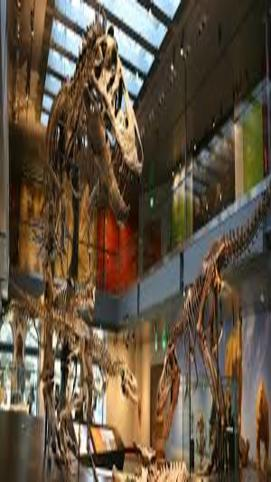
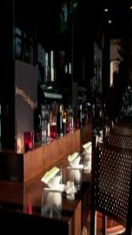
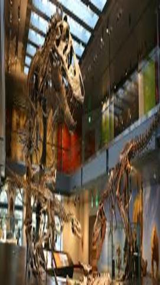
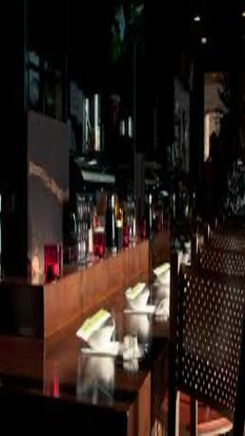

Kelly Lan
Kelly Lan is an anthropology student. Currently she is attending University of California, Riverside. Anthropology is a subject which has a heavy reliance on solid research and analytical skills. She always prided herself on her ability to think outside of the box; not just in Anthropology, but with any challenge that life offers me.
Beyond this, her interest and fervent desire to succeed as an Anthropology student stems far back to her days as a child. Everything started with a book her sister brought in a book fair. As she read, she found her eyes and imagination utterly fascinated with the culture of ancient civilizations. The thought of nations far off from times long passed stimulated her need to know more of these people and preserve their history. Ever since this initial experience, her favorite class has been History due to its deep and vivid examinations into varying times in human existence.
Although she loved History, she found herself so deeply invested that it could not quench her intellectual thirst. Her heart yearned for more and often in the immediate hours outside of school in bookstores, carefully examining the books on ancient cultures and world history. Being so caught up in these books, she often found herself losing track of time and hours would pass before she came to a decision on which to purchase.
Museums are a favorite location of Kelly. If she had to choose a place in which she could spend entire days, it would be here. Each time she peered through the glass at the carefully arranged artifacts wondering at the humans that held them thousands of years ago wishing she could handle them herself and study their intricacies. This desire is what spurns Kelly toward her ultimate dream of becoming an Archaeologist. She plans to pursue advanced studies in Archaeology so that one day she may potentially be able to answer those unanswered questions about our civilization’s past. Kelly believes this is the necessary mindset needed to be successful in Anthropology; she acknowledges the hardships that will surely arise but she intends to change the world with her work.
Experience
Education
University of California Riverside
Portfolio
.jpg)
.jpg)



